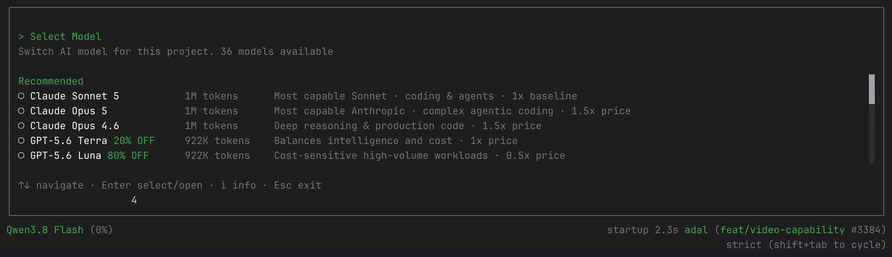

Ask first.
AdaL asks before edits and commands.
Before the class
Join Discord to ask questions during class. Then install AdaL for your operating system.
The class
This is not the traditional landing-page process: design files, handoff, implementation, then rounds of feedback. You give AdaL a reference or prompt, it builds the page in code, and browser and video checks improve the next pass.
Launch
Controls for today
/initGive AdaL the project context before the build starts.
/modelChoose a model for research, design, or implementation.
/capabilitiesSee browser-use and video when the work needs them.
Shift + Tab
Press Shift + Tab to cycle modes. The current mode is shown in AdaL’s status bar.
AdaL asks before edits and commands.
Edits apply; commands still need approval.
Plan, build, test, and iterate without stopping at each step.
Models
Open /model during a session. The picker describes each model’s strengths.
